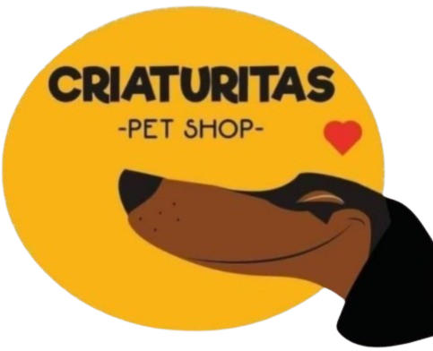

Plataforma para Criaturitas Pet Shop
Proyecto social: digitalizar por completo una veterinaria real que trabajaba con hojas de cálculo. Cuatro microservicios, panel web y app móvil para el veterinario, funcionando en producción con un coste de infraestructura de casi cero.

Contexto
Este proyecto nació de un encargo del Centro Educativo Técnico Laboral KINAL con una condición poco habitual: no bastaba con programar, había que buscar un lugar real al que ayudar. Con mi equipo —Nexus Code— salimos a buscar un negocio pequeño que necesitara software y no pudiera pagárselo, y elegimos Criaturitas Pet Shop, una veterinaria y pet shop que no tenía absolutamente nada de infraestructura digital.
En lugar de imponerle un sistema, nos sentamos con ellos a entender cómo trabajaban de verdad: cómo atendían una cita, cómo cobraban, qué anotaban de cada mascota y qué era lo que más tiempo les quitaba. De esas conversaciones salió el alcance, y volvimos a validarlo con ellos a medida que las piezas iban funcionando.
Por respeto a la privacidad de sus clientes, esta ficha no incluye capturas del sistema: el panel muestra datos reales de personas y de sus mascotas. Lo único que se publica aquí es el logotipo de la veterinaria, con su permiso.
El problema
Todo el negocio vivía en hojas de cálculo. Había un archivo con los clientes y sus mascotas, otro para el control de grooming en el que cada visita añadía una columna nueva a la derecha —así que la hoja crecía a lo ancho sin fin— y un libro de cuadre de caja con una pestaña por mes que arrastraba más de año y medio de historia.
Eso significaba, en el día a día:
- Ningún historial clínico consultable: para saber qué le pasó a una mascota había que rastrear filas y columnas a mano.
- Ninguna forma fiable de saber qué estaba cobrado y qué no, ni de cerrar la caja sin cuadrar a mano.
- Ningún recordatorio de vacunas ni de citas: dependía de que alguien se acordara.
- Un único archivo como punto de fallo: si se corrompía o se borraba, se perdía el negocio entero.
Y dos restricciones que condicionaron todo el diseño: lo que construyéramos tenía que poder usarlo personal sin perfil técnico y tenía que costar prácticamente cero al mes, porque una veterinaria pequeña no puede sostener una factura de infraestructura.
Mi rol
Nos repartimos los microservicios y yo me hice cargo del servicio clínico, el que modela el trabajo del veterinario y el que más lógica cruzada tiene con los demás.
- Consultas, carnet de vacunación, grooming e historial clínico unificado por mascota.
- El reconciliador de operaciones pendientes: cuando una escritura hacia otro servicio falla, queda registrada y se reintenta después en lugar de perderse.
- Los controles de edición auditada: si se corrige un acto clínico ya facturado, el cobro emitido no se sobreescribe, se genera una nota de ajuste con su motivo.
- La idempotencia de las altas, para que un doble clic o un reintento tras un tiempo de espera no dupliquen un registro ni repitan sus efectos.
- Participé además en el panel web en React y en la definición de la arquitectura común.
La arquitectura
Cuatro microservicios y dos clientes. El servicio de identidad es el único que emite tokens; los otros tres solo los validan, compartiendo secreto, issuer y audience. Existe también un API Gateway en .NET con YARP —punto único de entrada, CORS centralizado y health checks— que se conserva pero hoy está desactivado: en producción el panel habla directo con cada servicio.
Identidad y acceso
.NET 8 · PostgreSQL
Login, roles y gestión de usuarios, con Clean Architecture, contraseñas con Argon2id y JWT. Tiene una réplica en Node con el mismo contrato, que es la que corre en producción.
Registro
Node · Express · MongoDB
Fuente de verdad de clientes, mascotas y citas, más el registro de dispositivos para las notificaciones push.
Clínico
Node · Express · MongoDB
Consultas, vacunas, grooming e historial unificado. Aquí vive el reconciliador de operaciones pendientes. Es la parte que desarrollé.
Finanzas
Node · Express · MongoDB
Facturación, cierre de caja, catálogo, inventario, precios de laboratorio y generación y envío de PDF.
Panel web
React 19 · Vite · Zustand
La herramienta del personal: registro, clínica, finanzas y administración, con la interfaz recortada según el rol de quien entra.
App del veterinario
Expo · React Native
Agenda de citas por día, mes y año, con recordatorios locales y notificaciones push cuando cambia el estado de una cita.
Decisiones técnicas
- Integridad referencial en caliente. Los servicios clínico y de finanzas no guardan copia de clientes ni mascotas: validan los identificadores llamando por HTTP al servicio de registro y reenviando el token del usuario. Menos datos duplicados, a cambio de un orden de arranque explícito.
- Escrituras cruzadas resilientes. Cerrar una cita o descontar inventario ocurre después de guardar lo propio y no se revierte si el otro servicio no responde: la operación queda marcada como pendiente y un reconciliador la reintenta. Se puede disparar a mano, por cron externo o por un trabajo en proceso.
- Idempotencia de extremo a extremo. Todas las altas aceptan una clave de idempotencia y responden con el registro original si la clave ya existe. El reintento es seguro porque los efectos también lo son: cerrar una cita es una máquina de estados que no reabre estados terminales, y el descuento de stock se deduplica con una clave estable.
- La factura es append-only. Corregir un acto clínico ya cobrado no reescribe la factura emitida: se registra una nota de ajuste ligada, con el delta y el motivo, y el importe vigente es el agregado. Un cobro emitido queda como evidencia, igual que en contabilidad.
- Borrado lógico en todo el sistema. Nada se borra físicamente. En una clínica, un historial que desaparece es peor que un registro de más.
- Permisos en un solo sitio. Tres roles —administración, recepción y veterinario— con el recorte de la interfaz centralizado en un único punto, y la autorización real siempre impuesta por el backend.
Producción con presupuesto cero
La restricción de coste no era un detalle: era un requisito. Todo el sistema corre hoy sobre planes gratuitos, y las piezas que esos planes no cubren las resolvimos nosotros.
- Panel y los cuatro servicios en Vercel, cada uno como proyecto serverless independiente del mismo repositorio.
- Supabase para PostgreSQL y MongoDB Atlas para la base compartida de los tres servicios de negocio.
- El reconciliador se dispara con un cron de GitHub Actions cada quince minutos, porque en serverless no hay un proceso vivo que lo haga.
- El plan gratuito de Atlas no incluye copias de seguridad, así que montamos un backup diario, también con GitHub Actions, con cifrado opcional y su guía de restauración.
- Notificaciones push del móvil vía Firebase Cloud Messaging, compiladas con EAS.
El precio de esa decisión es un arranque en frío de uno a tres segundos tras un rato sin uso. Lo asumimos a conciencia: para una clínica pequeña, esperar un segundo de vez en cuando es mejor negocio que una cuota mensual. Por eso mismo conservamos el gateway y los Dockerfile: si algún día pueden pagar un servidor encendido, el camino ya está hecho.
Resultados y aprendizajes
La veterinaria pasó de un montón de hojas de cálculo a una plataforma con historial por mascota, caja que cuadra sola, inventario, facturación con respaldo en PDF y una agenda que el veterinario lleva en el teléfono. Y sin factura mensual que pagar.
Técnicamente, este proyecto me enseñó lo que no se aprende en un ejercicio de clase: que en un sistema repartido lo difícil es lo que pasa cuando algo falla a mitad de camino. De ahí salió todo lo interesante —la reconciliación, la idempotencia, la factura append-only—: no de querer usar patrones, sino de preguntarnos qué ocurre si el segundo servicio no contesta justo después de haber guardado el primero.
Y me enseñó algo que no es código: que el requisito más valioso casi nunca está en el enunciado, está en escuchar a quien va a usar el sistema. Varias de las decisiones que más nos gustan —que nada se borre, que un cobro emitido no se pueda reescribir— salieron de entender cómo trabajaban ellos, no de un patrón de arquitectura.